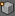
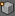

Cursor a seleccionado
Los objetos, al salir a escena, lo hacen con su Origen en el lugar en el que se encuentre en ese momento el Cursor 3D. Eso ya lo sabemos, pero ¿hasta qué punto podemos controlar la localización del Cursor 3D?
Recuerdas cómo volver a colocar el Cursor 3D en el origen 0,0,0
Pero en muchas ocasiones nuestra decisión de colocar el Cursor 3D no va a estar tan relacionada con el espacio en general, como con la localización del Origen de otro objeto, o de un vértice, en particular.
Si nos encontramos en Modo Objeto  , cuando sigamos el menú Objeto/Adherencia/Cursor a seleccionado veremos cómo el Cursor 3D se desplaza para coincidir con el Origen de aquel objeto eleccionado.
, cuando sigamos el menú Objeto/Adherencia/Cursor a seleccionado veremos cómo el Cursor 3D se desplaza para coincidir con el Origen de aquel objeto eleccionado.
Y si nos encontramos en Modo Edición  con un vértice seleccionado  el desplazamiento se hace de igual modo, sólo que ahora el menú es Malla/Adherencia/Cursor a seleccionado
con un vértice seleccionado  el desplazamiento se hace de igual modo, sólo que ahora el menú es Malla/Adherencia/Cursor a seleccionado